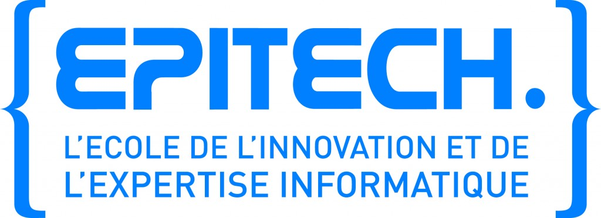

Discussion autour de la question du prix de l’école

Après beaucoup d’attente, voici enfin l’article concernant le prix de l’école. Nous vous présentons nos excuses pour ce retard et espérons que cet article répondra à vos attentes.
Voyant que beaucoup d’étudiants se demandaient pourquoi l’école coûtait autant et que peu de réponses étaient apportées, nous avons décidé d’aller poser la question à Nicolas Sadirac directement. Nous avons fait notre maximum pour éclaircir ce point, toutefois l’article risque de ne pas répondre à toutes vos interrogations pour des raisons de comptabilité que nous évoquerons plus loin.
Nous sommes donc allés voir NS avec quelques questions que nous avions préparées, mais n’avons pas eu besoin de les lui poser toutes : il a répondu de lui-même à la majorité, et nous en a même dit plus (l’entretien a duré environ 2h).
Devant la masse d’informations et le format assez peu conventionnel de l’entretien, nous avons choisi de produire un document structuré plutôt qu’une retranscription directe en questions-réponses.
Dans cet article, nous allons tout d’abord parler de la cherté de l’école : est-elle vraiment si chère, où se place-t-elle par rapport aux autres écoles françaises, qu’est-ce qui fait sa particularité ? Quels sont les coûts de fonctionnement, comment se finance-t-elle, qu’en est-il des écoles privées dans d’autes pays ? Et enfin, quels sont les axes de développement d’Epitech, dans quoi investit-elle en ce moment ?
Attention, c’est long… 
Une école coûteuse mais pas si chère
De toutes parts (ou presque) au sein de l’école, on peut entendre “Epitech c’est cher” ou encore “quand on paye aussi cher une école…”.
Pourtant, quand nous avons posé la question “Pourquoi l’école est-elle aussi chère ?” à Nicolas Sadirac, la réaction ne s’est pas fait attendre.
Non, ce n’est pas la bonne question. La bonne question est “ Pourquoi l’école coûte-t-elle autant ? ”
La cherté est le rapport entre le prix que l’on paye et le retour que l’on a. Car si la formation est coûteuse, voire une des plus coûteuses dans le privé pour les étudiants, elle est moins chère que la plupart des formations publiques ou privées, dont une grande partie du coût est supportée par l’état.
La première partie de cet article va donc parler de différents modèles existant entre le public et le privé, et d’autre part du positionnement d’Epitech au sein de ces modèles.
Nous parlerons également des conséquences financières d’un tel positionnement.
Du public au privé, un long chemin
Il y a tout un chemin entre le complètement privé et le complètement public.
Les écoles publiques, on le sait, sont bâties sur des modèles précis et ne sont pas libres de leurs décisions, qui suivent les politiques du moment, plus ou moins bienvenues. Elles dépendent directement de l’Etat à tous points de vue et doivent respecter un ensemble détaillé et contraignant de règles.
Sur le chemin rapprochant le privé du public, on peut franchir entre autres les paliers suivants :
- L’inscription au Rectorat, qui implique des visites de contrôle régulières pour s’assurer du bon fonctionnement (ou du moins du fonctionnement dans les règles) des établissements.
- Epitech est inscrite au Rectorat. Cette démarche n’est pas obligatoire, mais elle est nécessaire pour que les élèves bénéficient du statut d’étudiant (sécurité sociale, carte d’étudiant…). Le Rectorat envoie des inspecteurs d’académie deux à trois fois par an pour – je cite – “vérifier si on ne fait pas des trucs trop bizarres”.
- La “Reconnaissance”, de nature ministérielle, est une déclaration de l’Etat attestant que les pratiques administratives de l’école sont conformes aux règlements de l’Education Nationale et aux règlements internationaux, dans les grandes lignes. Elle atteste par exemple que les crédits ont une valeur en nombre d’heures de travail cohérente avec le reste des structures. Elle ne concerne pas la pédagogie (ou marginalement comme on le voit avec le cas des crédits).
- Le maintien de cette reconnaissance implique des inspections régulières. Epitech bénéficie de la Reconnaissance par l’Etat.
- L’inscription au RNCP1 (Registre National des Certifications Professionnelles) du diplôme Epitech a une valeur internationale et représente la reconnaissance des capacités professionnelles inculquées par la formation. Cet organisme interministériel appartient au monde du travail, pas à celui de l’éducation à proprement parler. Epitech est reconnue au plus haut niveau par le RNCP (annexe 2).
- Le Visa (annexe 3) est une autre forme de reconnaissance, qui porte, elle, sur la pédagogie. Le fait d’avoir un Visa pédagogique demande de voir sa formation validée comme utile, pertinente, par un conseil spécialisé. Epitech est actuellement en discussion avec l’Etat à ce sujet et envisage de se faire viser.
- La certification par la CTI ou Commission des Titres d’Ingénieurs implique de respecter les critères de la Conférence des Grandes Ecoles (qui encadre celles-ci), ce qui exige à la fois un certain contenu général et le fait d’avoir été visé. Elle impose de surcroît son propre cahier des charges pédagogique, particulièrement contraignant.
- La CTI française est de plus unique au monde. Elle n’est reconnue nulle part ailleurs et le contenu du cursus d’ingénieur tel que pratiqué en France n’est pas le même que celui des cursus de même nom à l’étranger.
- Il y a actuellement des pressions au niveau européen pour faire supprimer la CTI et harmoniser les titres d’ingénieurs entre la France et le reste des Etats membres.
Outre ces certifications, les établissements d’enseignement supérieur peuvent travailler sous contrat d’association avec l’Etat, ce qui rapproche grandement le niveau de contrainte de celui d’un établissement public.
La discussion ne portant pas initialement sur ce sujet complexe et le temps ne nous ayant pas permis de mener un travail de recherche exhaustif par ailleurs, des erreurs pourraient s’être glissées dans cet écrit. Nous vous présentons par avance nos excuses si ce devait être le cas.
Maintenant que ces différents niveaux d’engagement auprès de l’Etat ou d’organismes publics ont été abordés, nous pouvons résumer la position d’Epitech et ses conséquences financières par rapport aux autres écoles.
Une école indépendante
Epitech, créée par d’anciens étudiants de l’Epita lorsque celle-ci a décidé de se faire certifier par la CTI, représente le choix délibéré d’une liberté dans la manière de former les étudiants. Ce choix fondateur et primordial de l’école prime sur les aides qui pourraient être fournies par l’Etat ou d’autres organismes, et qui ne sont pas souhaitées dès lors qu’elles s’avèreraient pédagogiquement contraignantes. Ainsi, Epitech est actuellement inscrite au Rectorat, bénéficie de la Reconnaissance par l’Etat et son diplôme est inscrit au RNCP, mais aucun rapprochement réellement contraignant d’un ministère ou d’une organisation ne s’est fait.
En conséquence Epitech ne bénéficie que de très peu d’aides :
- la Taxe d’Apprentissage, qui n’est pas une subvention (ce n’est pas un dû obtenu de plein droit) et est strictement basée sur le volontariat de la part des entreprises.
- le financement par la branche professionnelle, ouvert par la certification accordée par le RNCP et qui permet de financer les contrats de professionnalisation.
L’école est donc particulièrement indépendante, ce qui lui permet de mener la pédagogie de son choix, à sa manière.
C’est une position particulière, que partagent très peu d’écoles.
En effet, un nombre important d’écoles privées bénéficie d’aides de l’état. Celles-ci peuvent aller jusqu’au paiement complet des professeurs. En contrepartie, ces écoles qui sont sous contrat national ont des contraintes concernant le type de professeurs embauchés, les diplômes délivrés et par conséquent le contenu des formations.
Selon Monsieur Sadirac, l’état investit environ 30 000 € dans la formation d’un ingénieur, le reste étant supporté par les frais de scolarité.
Il est à noter que la France est un des pays dans le monde qui consacrent (comparativement à leur PIB) le moins de budget à leurs étudiants, qu’ils soient dans le public ou dans le privé.
À titre indicatif, vous pouvez consulter les documents en annexe 4.
Epitech ne bénéficiant pas d’aides, cela signifie tout simplement que le coût de la formation se cantone au plus à ce que les étudiants payent.
Non, vous ne rêvez pas, nous sommes bien en train de dire qu’Epitech est plus économique (globalement) que la plupart des grandes écoles ou des formations d’ingénieur.
Ceci étant, autant de frais d’inscription payés chaque année constituent une somme importante dont les étudiants se demandent légitimement ce qu’il est fait.
Nous allons donc aborder cette question en présentant tout d’abord le budget d’Epitech et la part qu’y occupe la Taxe d’Apprentissage, puis au travers d’une analyse des principaux coûts de fonctionnement de l’école.
Le budget de l’école et les grandes masses financières
Le fonctionnement, la maintenance et le développement d’une école privée de grande envergure et aussi ambitieuse qu’Epitech engendrent des coûts importants. Il faut parvenir à financer ces coûts, chose qu’Epitech fait d’une façon très indépendante.
Dans cette partie nous allons rappeler la provenance et le montant du budget d’Epitech, puis évoquer les grandes masses financières de l’école, avec quelques exemples.
Le budget d’Epitech
Comme nous l’avons vu précédemment, Epitech tire son budget de deux sources, la Taxe d’Apprentissage payée par les entreprises et les frais de scolarité réglés par les étudiants de l’école.
La première rapporte environ 500 000 € par an et les seconds portent le budget total entre 20 et 22 millions d’euros.
Cette somme peut paraître énorme, mais ce budget est-il réellement si important au vu de la taille de l’école et de ses activités ? Pas tant que ça, comparé à bon nombre d’écoles d’ingénieurs (annexe 5) qui bénéficient de budgets parfois bien plus importants.
On peut par ailleurs noter que notre modèle très français de
financement des écoles n’est pas perçu universellement comme étant le
meilleur.
D’autres modèles existent
Contrairement à Epitech qui dépend de nos frais d’inscription, la plupart des grandes universités aux Etats-Unis, comme Harvard par exemple, n’ont pas besoin de ces frais ; elles ne font payer cher leur entrée que pour sélectionner leurs étudiants : les gens prêts à débourser l’argent requis, quitte à s’endetter le temps de leurs études, sont généralement motivés.
Alors comment ces écoles font-elles pour se financer ?
Tout simplement, un contrat est signé par l’étudiant à son entrée qui
dit qu’une fois sorti de l’université, il devra reverser des royalties
sur certains bénéfices qu’il fait à ladite université (annexe 6). Les
bénéfices concernés sont ceux faits dans le cadre de recherches,
projets, découvertes, etc… réalisés dans le cadre de ses études ou
découlant directement de celles-ci.
Comme si nous, en sortant d’Epitech, devions verser un pourcentage de
nos bénéfices à Epitech à vie car c’est elle qui nous a permis
d’acquérir les connaissances dont nos bénéfices découlent.
C’est pour ça que Microsoft verse tous les ans un pourcentage de ses
gains à certaines universités, dû à des droits de propriété
intellectuelle.
Certes, les projets faits dans le cadre d’Epitech appartiennent à l’école, mais aucune cessation de droits n’a jamais été refusée à des étudiants, et l’école n’a même jamais cherché à réclamer de l’argent sur les EIP !
Récapitulatif des masses financières
Le tableau suivant présente la répartition globale des dépenses de l’école, ou, dans le jargon des étudiants Epitech, “comment notre argent est utilisé” :
| Novembre 2010 | Prévisions 2011-2012 | |||
| Masse salariale | 53% 11 660 000 € |
50% 11 000 000 € |
||
| Pédagogie | 43% 9 460 000 € |
|||
| Administration | 7% 1 540 000 € |
|||
| Services | 3% 660 000 € |
|||
| Infrastructures | 20% 4 400 000 € |
15% 3 300 000 € |
||
| Locaux | 17% 3 740 000 € |
|||
| Entretien | 3% 660 000 € |
|||
| Informatique / Technique | 7% 1 540 000 € |
9% 1 980 000 € |
||
| Matériel | 5% 1 100 000 € |
3% | ||
| Réseau | 2% 440 000 € |
5% 1 100 000 € |
||
| Communication | 13% 2 860 000 € |
11% 2 420 000 € |
||
| Marge | 6% 1 320 000 € |
7% 1 540 000 € |
||
| Distribuée | 4% 880 000 € |
|||
| Mise en réserve | 2% 440 000 € |
|||
| Total | 99% 21 780 000 € |
100% 22 000 000 € |
Ces chiffres sont les dépenses nationales, qui regroupent les dépenses de toutes les régions.
Le peu de détail dans les dépenses vient du fait que la comptabilité d’Epitech est archaïque et non-analytique (elle ne compte que 2 personnes). Le groupe se dirige cependant vers ce type de comptabilité et compte l’avoir mis en place d’ici 2-3 ans.
De plus, ce sont les dépenses annuelles, et pas une moyenne de ce que l’école paie tous les ans. Ces chiffres sont donc à interpréter, et servent à donner un ordre d’idée.
Pour un peu plus de clarté :
Masse salariale
C’est la masse salariale chargée ; le pourcentage indiqué est le
pourcentage de coût réel, pas le pourcentage de salaires versés. En
réalité, un salaire coûte plus cher à l’entreprise que la valeur
reversée audit salarié.
- Pédagogie : les salaires des assistants récemment passés auto-entrepreneurs et des professeurs (prestataires ou non). Il y a 8 professeurs par ville, seul le nombre d’assistants varie ; le ratio étudiants / assistants souhaité est de 30, avec au minimum 1 assistant par salle. Ainsi les régions ayant des locaux dont les salles sont petites ont besoin de plus d’assistants puisque dans une salle ne pouvant contenir que 15 élèves on ne peut pas avoir un demi assistant.
- Administration : les salaires des ADM et des différents services d’Epitech (RI, RE, direction…).
- Services : les salaires des prestataires externes, qui ne font pas partie des salariés Epitech (de manière générale, c’est tout ce qui n’est pas le métier de l’école).
Infrastructures
- Locaux : la location ou l’achat des locaux et de leurs meubles. Par exemple, Nice a dû changer de locaux récemment car les anciens étaient devenus trop petits ; ce déménagement dans des locaux surdimensionnés (pour permettre la croissance future) a coûté 250 000 €, rien que cette année. Le rapport superficie/étudiant est donc plus grand à Nice que dans les autres régions, et le coût “disproportionné” de ce rapport est réparti sur la totalité des étudiants : ainsi les étudiants des autres régions paient pour ceux de Nice et, immanquablement, il y a une disparité entre les coûts des étudiants des différentes régions.
- Entretien : l’entretien de ces locaux (ménage, etc…).
Informatique / Technique
- Matériel : les serveurs, les PCs, les switchs…
- Réseau : l’abonnement à la fibre, l’accès à Internet.
Communication
La publicité, les salons, les impressions de documentation sur l’école et les salariés du service de communication (non compris dans la masse salariale).
Marge
- Distribuée : marge réutilisée par le groupe.
- Mise en réserve : marge réservée pour de prochains investissements. Epitech est une association, tout l’argent reçu doit donc être dépensé.
Après avoir pris connaissance de la répartition des dépenses générales, on peut se demander quels sont les projets dans lesquels l’école investit ou compte investir le plus, et quels sont ses axes de développement.
Le développement de l’école ou l’envers du décor, visible mais non regardé
Comme une entreprise, une école doit évoluer selon l’air du temps pour se développer au mieux en fonction des besoins économiques actuels ; en effet les étudiants en sortiront pour atterrir dans le marché du travail, et ils doivent pouvoir répondre aux besoins versatiles de ce marché.
Epitech a donc plusieurs axes de développement, en cours ou en
préparation, dont nous allons parler. Certains de ces projets sont
concrets et ont déjà été exposés aux étudiants, d’autres sont encore en
réflexion et ne sont pas sûrs de voir le jour.
La fibre
En 2010, Epitech a investi dans la fibre pour ses locaux : la mise en
place initiale a coûté 2 million d’euros et l’abonnement annuel est de
1,2 million d’euros. Quelques étudiants trouvent ça inutile pour
l’utilisation qu’on en a, cependant c’est un investissement inévitable
dans une école d’informatique qui ne cesse de croître et dont les
besoins en ressources grandissent en proportion.
Cette lourde dépense a été partiellement compensée par l’achat des
ordinateurs portables par les étudiants, qui déleste l’école de 800 000 à
900 000 € de frais de renouvellement du PIE par an.
Les laboratoires
Aussi, depuis quelques temps, Epitech réinvestit dans les laboratoires, notamment par le biais de l’embauche de Cyril Pierre de Geyer, dont le salaire et les frais de travail cumulés atteignent en tout entre 200 000 et 250 000 € par an.
Les investissements de l’école dans ce cadre servent à dynamiser les laboratoires, la création d’entreprises et l’innovation. Pour ceux qui ne seraient pas au courant, il y a d’ailleurs depuis quelques temps dans le campus parisien un incubateur appelé Creative Valley, fruit d’un partenariat entre Epitech et Push’Pull et soutenu entre autres par Google, Microsoft, Prestashop et Rentabiliweb.
Les laboratoires sont un des fleurons d’Epitech, regroupant quelques-uns des élèves les plus passionnés, compétents et impliqués de l’école. De plus en plus, les entreprises font appel aux laboratoires de l’école pour de la recherche et du développement, des preuves de concept, des conseils techniques avancés, ou simplement cherchent à promouvoir leurs produits et technologies au travers d’EIP en rapport.
La liste des grands comptes et des entreprises leaders qui font appel aux laboratoires Epitech se multiplie, la taille de ces derniers augmente de façon impressionnante et les prêts de matériels et technologies sont fréquents. L’année qui approche les verra d’ailleurs se rapprocher plus encore des étudiants en leur proposant toujours plus de possibilités.
Nous reviendrons sur ce sujet à part entière dans un prochain article.
L’EMBA, ou Executive Master of Business Administration
Un autre gros investissement, à perte pour le moment, est la création
de cette formation en 2 ans, réservée aux anciens d’Epitech. Elle est
destinée à former 10 à 12% d’étudiants brillants et solides afin de les
faire accéder à des postes à très haute responsabilité, auxquels ils
n’auraient pu prétendre malgré un excellent niveau technique sans un tel
diplôme ou sans beaucoup d’années d’expérience.
Cet EMBA est conçu spécialement pour des informaticiens et est orienté
vers la nouvelle économie numérique. Epitech a investi dans les
meilleurs professeurs : il y a, entre autres, un professeur de Harvard
et le professeur de marketing de HEC.
La première promotion rentre en septembre et est constituée d’une vingtaine d’anciens.
C’est donc un projet très coûteux (300 000 €), qui s’équilibrerait avec une trentaine d’étudiants, et très ambitieux puisque l’objectif d’Epitech est de créer une nouvelle génération de “board members”, une génération jeune, technique, innovante et, on l’espère, avec une pointe de féminité.
En effet, actuellement, ces “boards” ne sont constitués que d’hommes âgés car un des seuls moyens d’y arriver est d’être envoyé en formation intensive pendant 1 an dans une grande école comme HEC et, pour des raisons sociales, très peu de femmes ont le temps de se consacrer à cette formation.
Or l’EMBA d’Epitech est adapté à un public masculin comme féminin et dans l’impossibilité de se libérer en journée, puisqu’il propose des cours du soir et non une année de présentiel intensif.
Si ce projet aboutit, les retombées seraient bénéfiques pour toute l’école : seulement 0,01% d’ingénieurs arrivent dans un “board” et, avec entre 10 et 20 étudiants dans les “boards” chaque année, l’école sera la plus avancée dans ce secteur en France, et Epitech en sera d’autant plus reconnue.
Implantation a l’étranger
Une autre volonté d’Epitech, qui a commencé il y a quelques années, est de s’implanter à l’étranger. Une école à Dakar, qui existe encore aujourd’hui, a été créée à ces fins, mais il n’y a eu aucun résultat car le groupe était trop focalisé sur son développement en France.
Des démarches ont aussi été faites dans le Maghreb, en Tunisie par exemple, mais elles ont dû être mises en pause pour le moment au vu du climat politique actuel. Elles vont toutefois possiblement reprendre lorsque la situation se sera calmée.
Quelques tentatives ont été faites en Chine, qui n’ont pas abouti car le système éducatif là-bas est trop différent de celui d’Epitech, qui n’est donc pas très bien accueillie. Cependant le marché y est très attractif et même légitime puisque, selon Nicolas Sadirac, leurs écoles d’informatique ont beaucoup à apprendre de notre pédagogie ; en effet les méthodes d’apprentissage mises en pratique en Chine sont archaïques : l’apprentissage par coeur et la théorie sont leurs maîtres-mots, ce qui fait que les étudiants de leur meilleure université ont un niveau bien plus faible que les étudiants français.
Le positionnement à l’étranger est d’autant plus difficile que nous sommes trop étranges à leurs yeux : en France on sépare les écoles, ainsi Epitech est une école qui ne forme qu’à peu de métiers (tous liés à l’informatique), alors que les universités à travers le monde forment à des métiers divers et variés. Cela crée un “seuil d’étrangeté” à ne pas dépasser si l’on veut pouvoir s’implanter à l’étranger, car la façon dont les autres nous voient est très importante pour se vendre.
Diversification des filières
Pour parer à ce problème, M. Sadirac nous a fait part d’un de ses axes de réflexion, qui n’est pas partagé par tout le monde. Epitech ayant décidé de se poser comme école de l’innovation, il voudrait élargir l’école à d’autres filières, qui auraient toutes des caractéristiques communes constituant la valeur des étudiants : l’innovation, le pragmatisme et la pédagogie appliquée par projets. C’est par exemple le cas pour Stanford, dont la marque est le sérieux
En effet, le groupe pense que la valeur ajoutée de demain n’est pas
le savoir, mais l’innovation et la capacité de fédérer autour de cette
innovation. Les résultats sont concrets : 1% d’ingénieurs créent une
entreprise, et le taux de création d’entreprises à la sortie d’Epitech
est même supérieur à celui de HEC Entreprendre (17% contre 11%) !
De plus, Epitech a 20% du marché des étudiants BAC + 5 en informatique
en France et, selon Nicolas Sadirac, aller au-delà est dangereux. En
s’élargissant aux autres filières du numérique (journalisme,
marketing…), le groupe se développerait sans passer ce cap et paraîtrait
moins “étrange” aux yeux des pays extérieurs.
Bonus : Le prix de la cinquième année, et celui de la visibilité
Ce n’était pas à lui tout seul l’objet direct de cette rencontre et de cet article, mais il déchaîne les passions sur le forum… le prix de la cinquième année !
Alors nous dédions cette petite section à cette question : pourquoi la cinquième année coûte-t-elle “aussi cher” ?
L’artisanat pédagogique a un coût
Dans une université, où l’on aligne des centaines d’étudiants dans des amphithéatres pour quelques heures par semaine, la formation est pour ainsi dire industrialisée. Les coûts sont répartis, mutualisés.
Mais dans une école comme Epitech, où la formation est plus spécifique, composée de plus de petites briques dont chacun se saisit ou non, les coûts incompressibles s’accumulent.
Le nombre total d’heures de cours est faible, mais les cours sont nombreux, portant sur des sujets variés et faisant appel à des intervenants différents. Ils sont chacun suivis par un nombre peu important d’étudiants.
Les étudiants sont libres de leurs activités et ne pourraient même pas faire tenir tous les cours dans une semaine. Ceux qui font le choix de la passer en entreprise ne bénéficient pas directement de ces activités, mais comme nous allons le voir, cela participe à un écosystème.
Dans cet écosystème aux coûts mutualisés, tous les étudiants ont quelque chose à gagner, sous une forme qui dépend de leur propre implication, de leur volonté, de leurs attentes, ce qui impose une forme d’harmonisation des coûts.
Nous avions parlé des axes de développement d’Epitech, parlons un peu des coulisses de la cinquième année et de la visibilité de l’ecole.
Un écosystème complet
Epitech est un écosystème. Chacun y apporte et en reçoit une chose différente, mais ce n’est pas forcément visible au premier abord.
Un étudiant ne comprend pas forcément les dépenses dans quelque chose qu’il n’utilise pas.
On l’a vu précédemment avec les cours, mais c’est aussi le cas pour les laboratoires par exemple. Tout le monde n’en bénéficie pas directement, suivant ses choix.
Ainsi, certains étudiants payent pour d’autres. Ceux qui n’utilisent pas les possibilités offertes par l’école ou qui ne sont pas actifs, voire qui esquivent le plus possible le travail et la réalisation de grands projets, payent pour ceux qui les entreprennent et bénéficient directement des investissements.
Il est intéressant de noter que ce faisant, ils payent également pour la notoriété que ces projets vont apporter à leur école et d’une certaine façon à eux-mêmes.
Par exemple, près de 13 000 € ont été investis en matériel rien que sur un EIP de la promotion 2014 cette année !
L’école fait également appel à une agence de relations publiques qui a pour rôle de placer dans les médias 20 EIP par promotion, pour un coût total d’environ 300 000 € !
A peu près un quart des EIP bénéficient donc d’une exposition plus importante, mais encore une fois, cela ne fait-il pas du bien à toute l’école, et tous les EIP en ont-ils besoin ?
Le forum des EIP lui-même est une action de communication importante dont le coût est non négligeable du fait de l’importante communication qu’il demande.
Des étudiants brillants sont aussi envoyés à l’international pour participer à des forums, colloques, conférences et salons pour y représenter l’école ou simplement présenter leur travail. Ce type de déplacement revient à 2 000 ou 3 000 € en général.
De la même façon, l’année à l’étranger a un prix variable selon les
destinations. L’année en Chine coûte bien moins cher que celle aux
Etats-Unis. D’une certaine façon, les étudiants en Chine paient pour
ceux aux Etats-Unis, mais n’est-ce-pas justifié lorsque replacé dans le
fonctionnement global de l’école ? Cette présence internationale dans
des universités de renom apporte un indispensable rayonnement.
Le prix de la visibilité
Le diplôme n’est pas une somme de connaissances. C’est avant tout un symbole auquel s’attache une renommée. Cette renommée est le fruit du travail de nombreuses personnes que les étudiants ne voient pas forcément, et qui coûte cher.
Les gens se basent sur ce que d’autres leur disent de nous, donc la présence partout est nécessaire et cela se paie.
Ainsi, c’est au travers de repas avec des gens influents du monde du numérique, d’actions répétées sur le long terme, de réunions nombreuses, de lobbying et de relationnel en somme, que se forgent des liens qui ouvrent de nouvelles portes à l’école et à ses étudiants.
C’est ainsi par exemple que Jean-Baptiste Descroix Vernier est le parrain de la promotion 2012.
Sans que l’on s’en rende compte, c’est près de six mois de travail qu’il a fallu pour que le Digital Innovation for Business Certificate de HEC et Google ouvre ses portes aux Epitech, gratuitement !
C’est près de 30 rendez-vous et une présence partout qu’il a fallu pour que le Hackathon Google Apps Script ait lieu à Epitech !
L’effet de bouche à oreille donne de la force à Epitech, qui ne peut pas juste dire “Nous sommes les meilleurs !” pour convaincre : tout le monde le fait.
Ce sont tous ces éléments qui font que la cinquième année a un tel prix malgré une présence moins importante des étudiants : les coûts sont autre part que là où ces derniers le pensent souvent !
Pour conclure cette partie, il ne faut pas oublier que la vie dans les salles machines ou pendant les stages en entreprise ne représente pas la totalité de la vie d’Epitech, et que bon nombre de personnes s’activent ailleurs pour que l’Ecole continue de s’élever !
Conclusion
En conclusion, il est important d’admettre qu’une bonne partie des ces informations étaient disponibles pour tous les étudiants : un peu de recherche, lire la newsletter (eh oui, M. Sadirac a été attristé de savoir que peu de gens la lisaient malgré le soin qu’ils y apportent ! De même il est toujours attristé d’entendre que des étudiants ont la sensation qu’il se fait de l’argent sur leur dos.) et, pourquoi pas, un rendez-vous avec des membres de la direction sont à la portée de n’importe qui. Savoir comment son école fonctionne, quelle est sa place au sein de notre société, quels sont ses enjeux et ses difficultés sont des points qu’il est nécessaire de prendre en compte afin de comprendre la complexité liée à la direction d’une telle entité.
Nous sommes allés chercher des informations qu’il vous aurait été difficile de trouver et les avons exposées dans cet article, à vous maintenant d’en faire votre propre jugement, en espérant que tout soit plus clair pour tout le monde.
Nous sommes tout de même heureux de faire l’intermédiaire entre la
direction et les étudiants, et si vous cherchez des informations
n’hésitez pas à nous en faire part, nous serons contents de vous aider
dans vos démarches.
Pourrait-on voir, à l’avenir, une mise en public des données, sur
l’intranet par exemple, concernant l’école, dans la lignée de l’Open
Data ?
Que pensez-vous que nous devrions faire afin de faciliter la communication interne à Epitech ? Un format papier distribué à intervalles réguliers non ? Quel genre d’article ?
De façon générale, nous souhaitons rester à l’écoute pour évoluer progressivement vers un format qui correspondra au mieux à vos attentes et besoins et traiter les sujets qui vous tiennent à coeur. Nous espérons ainsi contribuer au bon fonctionnement de toute l’école, en restaurant la compréhension de l’administration par les étudiant, informant sur les activités internes, et mettant une petite touche supplémentaire d’animation.
Annexes:
1. Pour plus d’informations sur le RNCP : http://www.rncp.cncp.gouv.fr/
2. Pour plus d’informations sur l’enregistrement du diplôme Epitech auprès du RNCP : http://www.rncp.cncp.gouv.fr/grand-public/visualisationFiche?format=fr&fiche=5588
3. Pour plus d’informations sur le Visa de l’éducation nationale : http://www.educpros.fr/dossiers/les-labels-et-accreditations-delivres-par-l-etat/h/97320ee24a/d/1033/a/le-visa-de-leducation-nationale.html
4. Les dépenses par élève en France :
http://media.enseignementsup-recherche.gouv.fr/file/2011/10/4/DEPP-NI-2011-15-depense-eleve-etudiant-France-OCDE_198104.pdf
et http://www.education.gouv.fr/cid11/le-cout-d-une-scolarite.html.
5. Le budget des écoles d’ingénieurs : http://etudiant.aujourdhui.fr/etudiant/info/ecoles-d-ingenieurs-puissance-recrutement-budget-effectifs.html
et
http://www.usinenouvelle.com/comparatif-des-ecoles-d-ingenieurs-2012-par-budget
6. Pour plus d’informations sur les droits de propriété intellectuelle dans les universités américaines :
http://www.techtransfer.harvard.edu/resources/policies/IP/
http://dor.stanford.edu/Resources/ip.html
Chasseurs : bereng_p, lepage_b, darnay_l
Rédacteurs / Correcteurs : darnay_l, bereng_p
“Non, vous ne rêvez pas, nous sommes bien en train de dire qu’Epitech est plus économique (globalement) que la plupart des grandes écoles ou des formations d’ingénieur.”
A 30k investit par l’état pour un ingénieur, je ne vois pas en quoi l’école est moins chère ? En speed 10k * 3 sur les 3 dernieres années + 2 * 7k sur les deux premieres => 44k grosso modo
“lire la newsletter (eh oui, M. Sadirac a été attristé de savoir que peu de gens la lisaient malgré le soin qu’ils y apportent !”
Si il y avait plus de contenu (comprendre d’informations) et pas de texte marketing assez vide ça aurait plus d’interet, mais en l’état elle parait surtout etre faite pour faire de la com à l’exterieur.
“De même il est toujours attristé d’entendre que des étudiants ont la sensation qu’il se fait de l’argent sur leur dos.”
Même si il font attention à la pédago c’est de l’éducation privée == un business. Et si ce n’était pas le cas on aurait probablement plus de transparence sur les propriétaires des locaux des écoles, et la structure de l’école (fineduc / ionis / etc). J’ai du mal à croire que Sellam / Bardèche & Cie ne soient pas là pour faire du profit (et ce n’est même pas une critique, ça parait juste logique).
Il a été écrit “la plupart des grandes écoles ou des formations d’ingénieur.”.
Le corollaire c’est que certaines sont moins chères.
Coûteuses serait d’ailleurs plus exact.
D’autre part, nous n’avons pas restreint à “publiques”, et tu observeras que le fait que l’Etat investisse n’empêche pas de collecter des frais de scolarité qui hormis dans les formations TOTALEMENT publiques, sont bien présents, et pesants.
Je te renvoie aux documents en annexe. Au pire on trouvera que “la plupart” était exagéré et on retombera sur “une grande partie”.
Pour la newsletter, si la forme effectivement est très marketing, il ya tout de même du contenu, assez pour être informé et continuer à creuser du moins. Une remontée d’info auprès de la comm elle-même pourrait être souhaitable.
Concernant le dernier point je ne sais pas… il ne faut pas confondre business et pompe à fric massive. De toutes façons, je vois mal comment les sorties d’argent peuvent se faire légalement en dehors de la location de locaux et autres choses du même genre où l’argent sort clairement.
Je ne pense pas non plus que le problème de fond soit la transparence, juste que ça ne nous regarde pas tant qu’on ne se fait pas arnaquer. En conséquence de quoi, pour savoir, il faut aller demander. Un jour un article avec le Président du Ionis Group ?
Le prix des écoles n’est pas indiqué, mais on peut toujours farfouiller sur leurs différents sites.
Pour moi la distinction est simple : elle est affaire de priorités !
Il y a une différence entre faire du business, faire du chiffre, gagner de l’argent, ce qui n’a rien de malhonnête en soi et nous sommes d’accord là-dessus, et le faire en priorité avant tout le reste.
Certes, les entreprises s’y connaissent pour ça et je n’ai aucun doute sur le fait que des pratiques similaires aient cours à Ionis. Pour la wac je n’en sais rien, mais j’aimerais bien des sources parce que si c’est pour balancer ça comme ça… c’est un peu moche.
Même dans le contexte où l’école ferait de son mieux, je pourrais concevoir que certains chiffres ne soient pas donnés. Notamment, je pense qu’en dehors de l’usage qui est fait des frais de scolarités des étudiants, le reste ne nous concerne pas. Si le groupe Ionis a envie de spéculer en bourse en utilisant l’argent qu’il gagne en louant des locaux, ça le regarde et je m’en fiche tant que mes frais de scolarité sont bien utilisés pour moi et pas pour autre chose.Si demain Ionis fait payer excessivement les locaux parce que ça leur permet de jouer en bourse, là ça me concernera.
Je sais que le monde n’est pas tout rose tu sais. Mais j’essaye de ne pas ranger les gens dans des cases par défaut, j’attends d’avoir des faits concrets à l’appui, que je n’ai pour l’instant pas sous les yeux, même si je soupçonne certaines choses. Reste à voir à quel niveau elles se passent, également.
Peu de commentaires à cet article, c’est dommage car il est intéressant. On pourrait reprocher néanmoins le point de vue bien trop subjectif de celui-ci.
Nous encourageons les étudiants d’Epitech à utiliser le forum pour répondre à nos articles afin de centraliser les discussions :
https://www.epitech.eu/intra/index.php?section=all&page=forum&post=66951
C’est un point qui peut se débattre.
Je n’ai pas la sensation que nous ayons été subjectifs.
Je pense au contraitre que nous avons été plutôt objectifs, dans la limite des informations objectivement à notre disposition !
Souvent les étudiants abordent ces problèmes prétendument sous un angle “objectif” mais leur “objectif” n’est que ce qui leur apparaît comme une “évidence” pas si objective et fondée que ça.
Au contraire de cela, nous nous basons sur les informations données par les personnes de référence (documents officiels ou bien notre directeur) pour émettre en fonction d’elles des observations objectives. Si ces observations devaient être faussées par des informations biaisées, ce serait encore une autre affaire.
Le titre qui m’a le plus intercepté est celui-ci :
“Le développement de l’école ou l’envers du décor, visible mais non regardé”
Cette phrase n’est pas objective car elle pointe la faute aux élèves : “L’école dépense pour les élèves, mais les élèves ne regardent pas”. Le point de vue inverse dirait que si les élèves ne voient pas, c’est probablement que pour eux l’investissement fait dans l’école n’est pas au bon endroit. De plus, le choix du verbe “regarder” n’est pas annodin, car c’est l’action de porter la vue sur quelque chose (qui ne résulte pas nécessairement sur la vue réelle de cette chose). On reproche donc ici carrément aux élèves de fermer les yeux et de ne pas vouloir regarder ce que l’école investi.
Vous abordez également pas mal de passages avec le point de vue de Nicolas Sadirac, comme s’il écrivait lui-même ces lignes. Bien qu’on sache qu’il s’agit effectivement de son point de vue, vous en tant que journalistes devraient normalement faire le relai “Monsieur Sadirac a dit que” “D’après Monsieur Sadirac”. Beaucoup de points sont débattables (la comparaison avec les écoles publiques par exemple), si vous auriez pris un peu plus de recul sur la rédaction, les élèves auraient débattu directement sur la position de Mr Sadirac, et non pas sur celle des journalistes !
Je ne prétends pas du tout être capable de faire un article réellement objectif, c’est dur je le conçois, et je pense que vous faites en sorte de l’être le plus possible. Je pense quand même que c’est plus cool pour les élèves de lire un journal qu’il a l’impression d’être neutre.
Merci en tout cas pour cet article qui regorge néanmoins d’informations intéressantes. Bon courage pour les prochains !
Je pense que certaines caractéristiques de l’article sont mal comprises.
Concernant le titre, c’est factuel : si moi, et un certain nombre d’autres personnes (car c’est une des raisons pour lesquelles ce genre d’articles voit le jour) savons tout ou partie de ces choses, y compris un certain nombre avant l’interview, c’est bien qu’elles sont visibles, on n’a pas eu de traitement de faveur. Si personne ne les voit, c’est essentiellement parce que personne ne regarde, et en tant que délégué, astek, astypus (ACSEL) plus quelques heures sup’ sur des choses qui me concernent moins, je peux garantir que ce n’est pas faute de les inviter à se bouger pour venir voir ! Comment peut-on être en désaccord avec quelque chose qu’on ne connaît pas ?
Ca n’empêche pas que régulièrement, je dénonce clairement le manque de qualité de la communication du haut vers le bas dans cette école (et plus encore). Ce que je reproche personnellement aux élèves, c’est de regarder leurs pieds quand on leur dit de regarder autour d’eux, au lieu d’aller mettre les mains dans le cambouis, de voir ce qui se passe et de se faire un avis. Dans cet article nous ne le reprochons pas : nous indiquons simplement ce comportement, pour qu’ils en prennent conscience.
Concernant le point de vue c’est très simple : pour faire un traitement contradictoire, il aurait fallu 4h d’entretien et le double de volume. Ici, le but n’était pas du tout de rédiger un article de réflexion sur la chose, c’était de rapporter la simple réponse de notre directeur aux questions qui étaient posées, rien de plus. Les annexes n’ont été ajoutées d’ailleurs que pour vous simplifier le travail de recherche nécessaire pour aller plus loin, pas comme un corpus documentaire de référence incontestable. Je pense que nous n’avons que rarement dévié de la ligne de Monsieur Sadirac, hormis erreurs éventuelles ou limites à notre compréhension.
Je pense que l’audio viendra compléter de façon pertinente ce commentaire, si nous y sommes autorisés.
Merci beaucoup pour ce brin de discussion et ces encouragements. L’équipe s’essaiera sûrement à d’autres styles au fil du temps. Il en faut pour forger une véritable ligne éditoriale.
Long et beau billet avec des informations intéressantes à rebondir.
Hadrien
Bonjour,
je souhaiterais ajouter une remarque personnelle et quelques points concernant Epitech.
Je suis comme kwame un ancien, promo 2001 et après créé et revendu plusieurs entreprises j’ai choisi de rejoindre Epitech (j’avais plusieurs autres pistes entrepreneuriales et propositions) pour plusieurs raisons mais la principale est la foi et la réelle envie de Nicolas de vous aider et de pousser cette école.
Le renforcement de la direction avec l’arrivée de Kwame et de moi même est la résultante de cet état d’esprit (sans compter le recrutement de Cyril IHSSAN à Lyon).
Comme certains j’ai eu l’impression que le coût de ma scolarité était élevé mais en travaillant en part time et après une année post école j’avais tout remboursé et un diplôme reconnu en poche. Donc après coup je ne trouve finalement pas que le coût était élevé.
Depuis mon arrivée j’ai pu travailler sur plusieurs projets pour vous mettre au centre de ce qui se fait :
*Partenariats écoles de commerces*
L’une des associations de Business Angels dont je fais parti résume la qualité d’un projet à deux facteurs : le premier l’idée (forcement) et le second tout aussi important, voire plus, l’équipe. Une bonne équipe c’est le regroupement de trois profils : Un teck brillant (vous), un business guy (un HEC/ESSEC) et des cheveux gris (un ancien, par exemple un EMBA Epitech).
C’est pour cette raison que nous avons développé nos liens avec HEC et l’avons élargi à d’autres écoles. La ou la boucle se boucle c’est que nous allons proposer aux anciens qui suivent l’EMBA de coacher des EIP… Je vous laisse imaginer l’intérêt en terme de création d’entreprises…
- Partenariat HEC
– Académie Google / HEC
– Certificat Digital Business for Innovation
– C’est monsieur marketing d’HEC qui fait les cours de marketing sur l’EMBA
– J’animerais à la rentrée des cours à HEC pour tisser encore plus nos liens
- Partenariat ESSEC
– Un master commun est en réflexion
- Partenariat EM Grenoble
– Nous reproduisons le succès de l’académie Google HEC en région avec l’EM Grenoble géré par Cyril IHSSAN à Lyon.
*Les laboratoires*
Nicolas à bien résumé l’importance des laboratoires, je n’en remettrais pas une couche si ce n’est un mot : investissez vous dans les laboratoires !
- Accélération des laboratoires
– Structuration progressive des laboratoires
– Création d’une plateforme commune de publication Web
– Amélioration des moyens dédiés aux laboratoires
*Création d’un club des entrepreneurs Epitech*
Vous êtes très nombreux à créer des sociétés post Epitech, l’une des clefs de la réussite est le réseautage. Avec Anais du service des anciens nous avons créé le club des entrepreneurs Epitech. Déjà en quelques mois c’est plusieurs dizaines de milliers d’euros de projets qui se sont fait par ce biais.
*Executive MBA*
C’est la plus grosse partie de mon travail, la formation qui est entrain d’être mis en place est vraiment super et grâce à des moyens importants on arrive à avoir les meilleurs professeurs du marché.
*Incubateur et visibilité*
Il y a beaucoup d’autres actions réalisées pour vous mettre en avant dans l’écosystème, pour que tout le monde parle de vous je me déplace un peu partout. Aujourd’hui la renommée d’Epitech est énorme (au point que c’est HEC qui est venu nous chercher, idem pour l’ESSEC). Globalement c’est ma méthode commerciale : générer de l’entrant grâce à une visibilité importante.
Bref on est tous mobilisés pour aller de l’avant pour vous et pour Epitech. Tout ne peut pas être rose en claquant des doigts mais on est entrain de se mettre en rang de bataille.
Voila quelques mots pour réagir sur ce sujet très intéressant. Je ne pense pas que beaucoup d’écoles aient cette transparence, preuve s’il en faut de l’investissement de Nicolas.
Bien à vous,
PS : Certains me connaissent, malheureusement pas assez mais j’ai une très grosse charge de travail aussi je ne peux pas venir aussi souvent que souhaité à votre rencontre mais n’hésitez pas à passer au 5ème me voir.
PS 2 : mon compte twitter : EPICyril
PS 3 : pour le reste de ma bio et de mes activités annexes je vous laisse voir linkedin